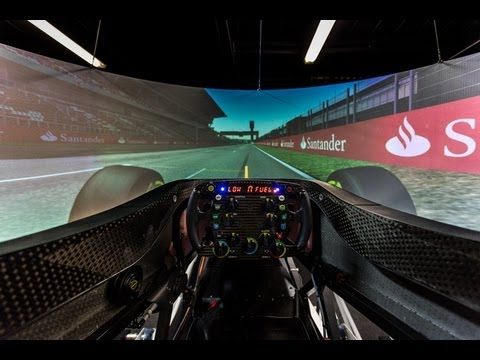
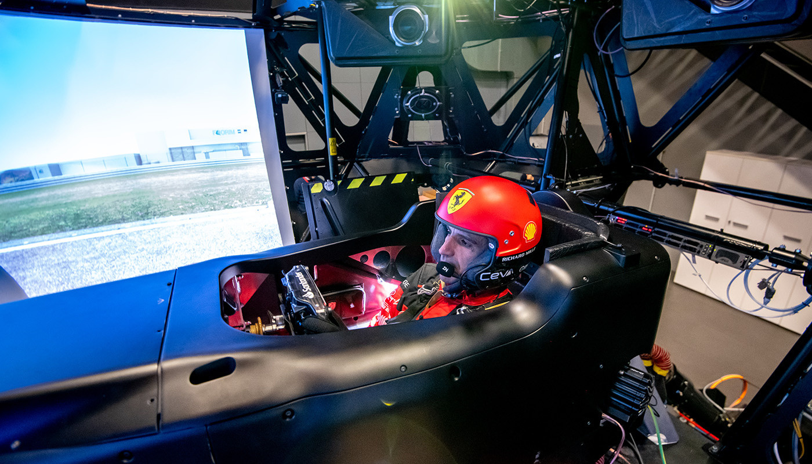

Introduction
Les simulateurs en Formule 1 sont des outils cruciaux qui permettent aux écuries de tester et optimiser les performances des voitures et des pilotes dans un environnement virtuel avant de passer à la piste. Grâce à des technologies de pointe comme l'IA et le Machine Learning, ces simulateurs atteignent une précision impressionnante (jusqu'à 98% selon Ferrari).


Le Cerveau Invisible du Simulateur
Un simulateur F1 fonctionne comme un jeu vidéo ultra-réaliste où tout est calculé pour reproduire fidèlement la physique réelle :
⚡ Calcul des réactions de la voiture : accélération, freinage, prise de virage
🏁 Reconstruction précise des circuits : bosses, virages, conditions météo
🤖 Comportement des adversaires : IA qui apprend à doubler et défendre
🎮 Retour haptique : vibrations du volant, sensations de dérapage
Physique et Calculs Clés
1. L'Accélération
La vitesse dépend de :
- Puissance du moteur (en chevaux)
- Poids de la voiture
- Rapport de boîte de vitesses
Accélération = (Puissance × Efficacité) / (Poids + Résistance de l'air)
Calculé 30 à 60 fois par seconde pour fluidité
2. La Prise de Virage
Facteurs calculés :
- Adhérence des pneus (usure, température)
- Aérodynamisme (appui des ailes)
- Force centrifuge
if vitesse > limite_du_virage:
voiture.dérape()
else:
voiture.tient_la_route()
3. Le Freinage
Distance de freinage = (Vitesse²) / (2 × Force de freinage × Adhérence)
Prend en compte : ABS, état de la piste, usure des freins
4. Dégâts et Usure
Calcul des impacts :
- Détection des parties endommagées (aile cassée, etc.)
- Usure progressive des pneus
Pourquoi une telle Complexité ?
Une F1 est une machine de précision, et les simulateurs professionnels doivent être ultra-réalistes pour :
- L'entraînement des pilotes
- Le développement de la voiture
- La validation des réglages
- L'économie de coûts (moins d'essais réels)
Exemple concret : Dans F1 23, quand vous prenez un virage à 200 km/h, le simulateur vérifie en millisecondes :
- Adhérence des pneus
- Appui aérodynamique
- Risque de dérapage
Le simulateur ne devine pas - il calcule tout comme en réalité grâce à :
- Des formules physiques précises
- Des algorithmes complexes
- Une puissance de calcul importante
C'est cette programmation avancée qui fait la différence entre un simple jeu et un outil professionnel utilisé par les écuries de F1 !
2. Types de Simulateurs en Formule 1
Simulateurs de Pilotage
Les simulateurs de pilotage permettent aux pilotes de s'entraîner sur des circuits virtuels. Ils reproduisent fidèlement les conditions de course, y compris les comportements de la voiture, les conditions météo et les interactions avec les autres pilotes. Ces simulateurs sont essentiels pour préparer les pilotes aux courses réelles.
Simulateurs Aérodynamiques (CFD)
Les simulateurs aérodynamiques, basés sur la dynamique des fluides numérique (CFD), permettent de simuler les flux d'air autour de la voiture. Ces simulations aident les ingénieurs à optimiser l'aérodynamisme de la voiture, ce qui est crucial pour améliorer la performance et réduire la traînée.
Simulateurs de Pneus
Les simulateurs de pneus prévoient l'usure et les performances des pneus en fonction des conditions de piste et des stratégies de course. Ces outils aident les écuries à choisir les meilleurs pneus et à adapter leurs stratégies en temps réel.
Simulateurs de Stratégie
Les simulateurs de stratégie permettent aux écuries de tester différentes stratégies de course, comme les arrêts aux stands et les choix de pneus. Ces simulations prennent en compte les conditions météo, les performances des concurrents et les règles de la course.
3. Technologies Utilisées dans les Simulateurs
Python
Python est largement utilisé pour l'analyse de données, la télémétrie et l'intelligence artificielle. C'est un langage polyvalent et facile à apprendre.
En savoir plus sur Python
C++
C++ est utilisé pour les simulations en temps réel en raison de sa performance et de sa gestion fine de la mémoire. Il est souvent utilisé dans les moteurs de simulation.
En savoir plus sur C++
MATLAB
MATLAB est utilisé pour la modélisation avancée et l'analyse numérique. Il est particulièrement utile pour les simulations mathématiques complexes.
En savoir plus sur MATLAB
OpenFOAM
OpenFOAM est un outil open source pour les simulations aérodynamiques (CFD). Il est largement utilisé en Formule 1 pour optimiser l'aérodynamisme des voitures.
En savoir plus sur OpenFOAM
4. Impact des Simulateurs sur la Performance
Les simulateurs ont un impact significatif sur la performance des écuries de Formule 1. Voici quelques exemples concrets :
- Réduction des coûts : Les simulations permettent de tester des configurations sans avoir à construire des prototypes physiques, ce qui réduit les coûts de développement.
- Optimisation des stratégies : Les simulateurs de stratégie aident les écuries à prendre des décisions en temps réel pendant les courses, comme les arrêts aux stands et les choix de pneus.
- Amélioration des performances des pilotes : Les simulateurs de pilotage permettent aux pilotes de s'entraîner dans des conditions réalistes, ce qui améliore leur réactivité et leur précision sur la piste.
5. Défis et Innovations Futures
Les simulateurs en Formule 1 évoluent rapidement grâce à des technologies émergentes :
- Réalité Virtuelle (VR) : Pour des simulations de pilotage encore plus immersives, permettant aux pilotes de se sentir comme sur une vraie piste.
- Intelligence Artificielle (IA) : Pour optimiser les simulations et les stratégies de course en analysant des millions de points de données en temps réel.
- Réalité Augmentée (AR) : Pour superposer des données en temps réel pendant les simulations, aidant les ingénieurs à prendre des décisions plus éclairées.